History
From 753 BC, Rome grew from a city-state into an empire. The West fell in 476 AD, the East in 1453 AD.
A small city on seven hills became an empire that shaped law, language and stone.
From 753 BC, Rome grew from a city-state into an empire. The West fell in 476 AD, the East in 1453 AD.
The arch, dome, aqueducts, concrete and roads that still shape how we build.
Gladiators, gods, Latin and law: the beliefs and entertainments of daily Roman life.
Scan to open this site
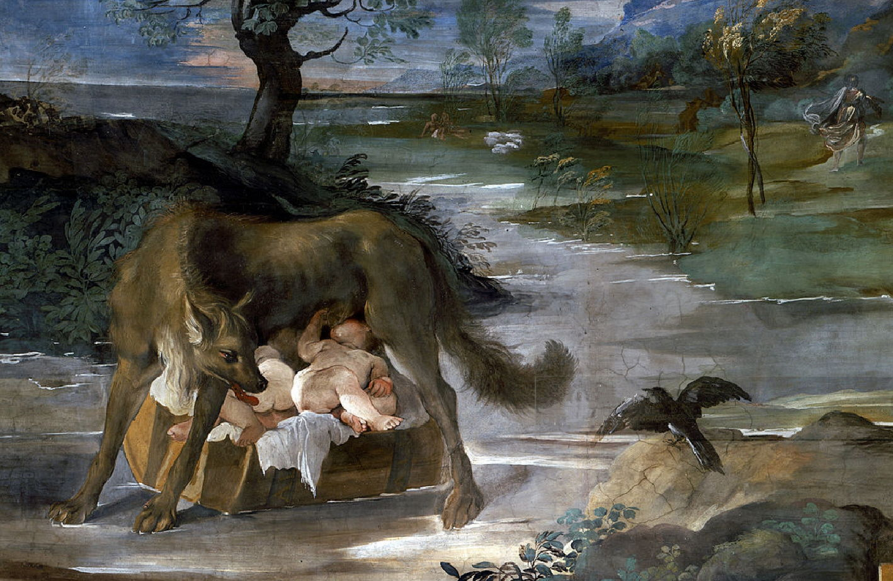
Twin brothers Romulus and Remus were raised by a she-wolf. They could not agree whether to build on the Palatine or the Aventine Hill, so they read the flight of birds. Romulus saw eagles and chose the Palatine. Remus was killed, and Romulus ruled the city named after him.
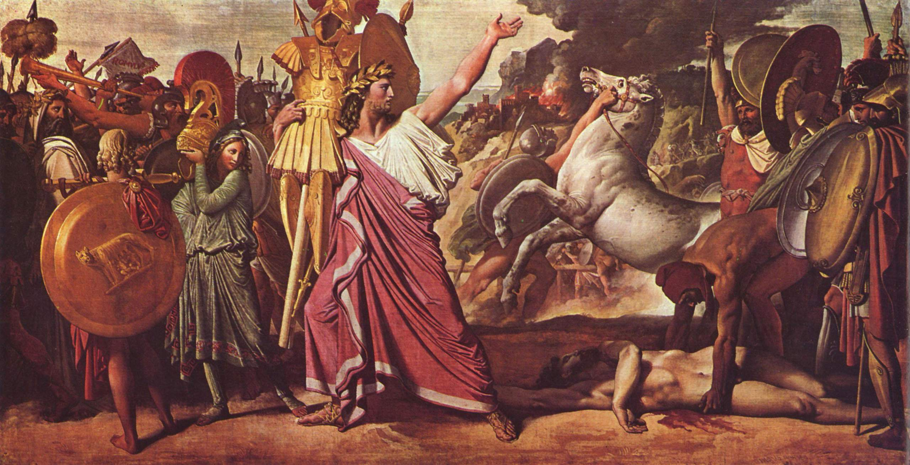
Kings such as Romulus and Numa Pompilius ruled early Rome. The harsh rule of the last king, Tarquin the Proud, ended the monarchy. This era produced the Senate, a council of patricians, and the first clashes between patricians and plebeians.
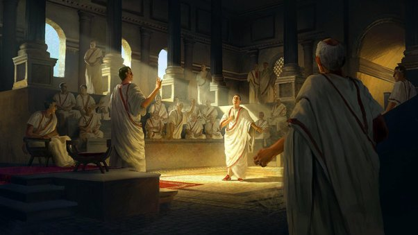
Power was shared among elected officials. The Conflict of the Orders gave plebeians a voice, and the Punic Wars against Carthage spread Roman rule across the Mediterranean. Julius Caesar's conquests led toward autocracy. After his murder in 44 BC, Octavian rose as Augustus, the first emperor.
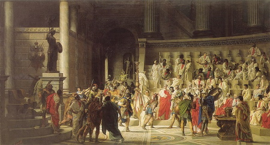
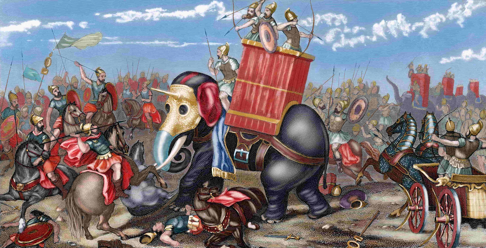
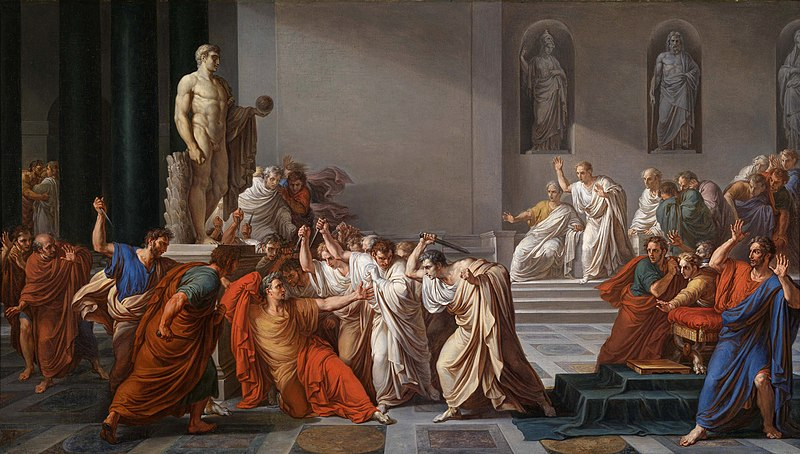
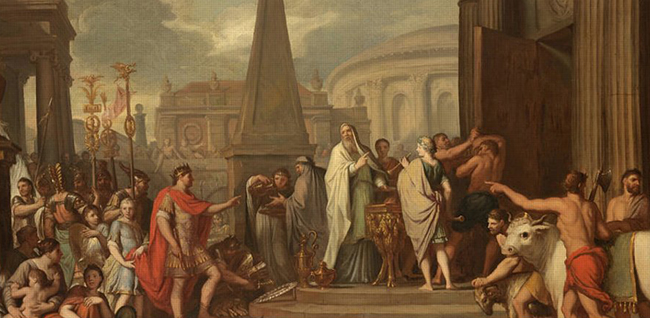
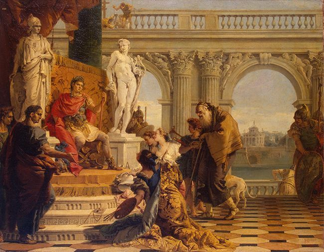
Augustus brought the Pax Romana, a long peace. The Crisis of the Third Century then brought civil strife and invasion, and Diocletian split power in the Tetrarchy. Constantine moved the capital to Constantinople. The West fell to Odoacer in 476 AD, and the East, later called Byzantine, lasted until 1453.
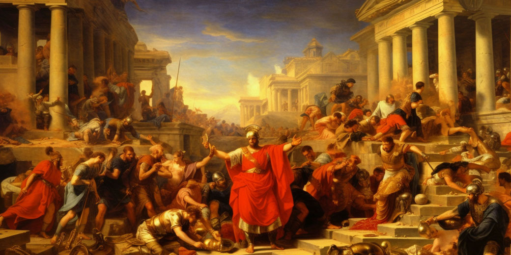
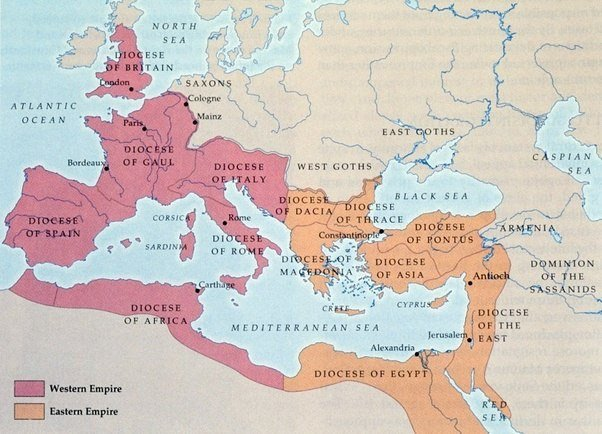
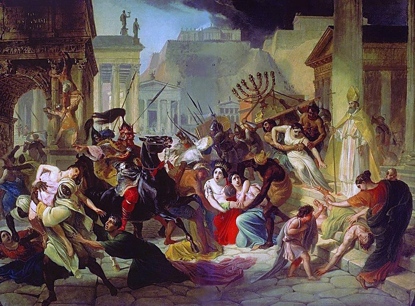
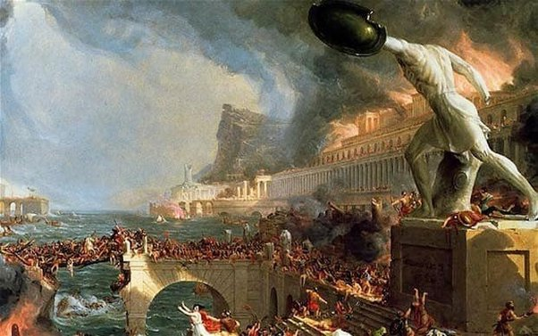
Durable concrete raised the Colosseum and Pantheon. Arches carried heavy loads.
Stone channels brought fresh water to baths, fountains and homes.
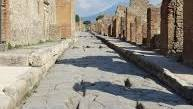
A vast network moved armies, trade and news across the empire.
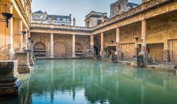
Bathing, exercise and conversation under one roof.
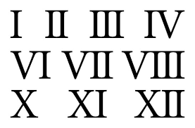
Letters stood in for numbers in records and official documents.
Drains kept cities clean, and grid layouts with forums shaped city design.
Forceps, surgical tools, and skilled treatment of bones and wounds.
The gladius, pilum and lorica segmentata kept the legions ahead.
Public bibliothecae stored scrolls, and the wheeled plough boosted harvests.
Latin carried law, philosophy and poetry: Virgil's Aeneid, Caesar's Commentarii de Bello Gallico, and the plays of Plautus and Terence.
Monumental buildings, sculpture and frescoes. The Colosseum, Pantheon and Trajan's Column are icons.
The Twelve Tables were an early written code. Ideas like ius civile and ius gentium shaped later legal systems.
Gladiator fights and chariot races filled the Colosseum, while theatres staged comedies and tragedies.
Schools taught grammar and rhetoric. Seneca, Epictetus and Marcus Aurelius shaped Stoic ethics.
Romans worshipped many gods, including Jupiter, Juno and Minerva, with sacrifices and festivals. Augurs read bird flight for omens, mystery cults like Isis and Mithras offered an afterlife, and emperors were often deified after death. Greek myth blended into Roman belief.
Score: 0
Seven questions on what you just read.